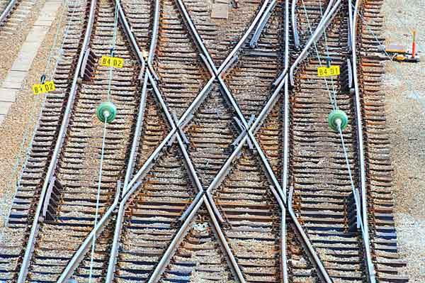
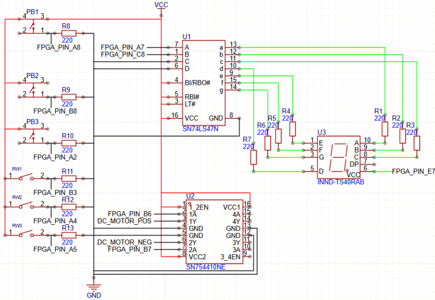
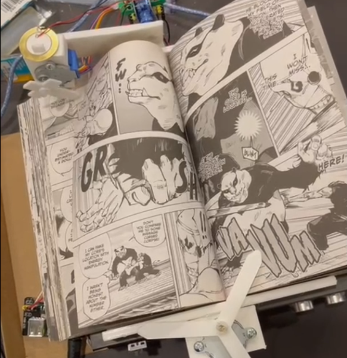

About Me:
|
||
| Throughout my life, I have always enjoyed wondering why or how certain things happen. The processes that shape the world around us has always intrigued my mind. I would research and learn why these processes occur. I love watching and learning about how the engineering mistakes from past are able to let us reach new heights with the technology used today, be it in safety or better functionality. | ||
| Education: | Industrial Automation Engineering at McMaster University | |
Experience:
|
||
| Worked in the Rail and Transit Industry where I was able to help develop tools in order to automate tasks previously done by hand. I developed tools from the start as well as enhancing current tool created for the team. I worked with various of types of people in various subjects in this industry from train crossovers to train crossings. | ||
| January 2024 - December 2024 |  | |
Projects:
|
||
FPGA Elevator |
Running a motor to act as an elevator to go to 3 seperate floors using a reed sensor for floor detection. Utilizing an FPGA as the controller to ensure proper movement is completed. |  |
Page Flipper |
Creating a system to automatically flip a page of a book. It utilizes servo and stepper motors as actuatos while utilizing buttons, ultrasonic and piezoelectric sensors in order to make the system work perfectly. |  |
Email: arboladj@mcmaster.ca
LinkedIn: Josh Arboladora